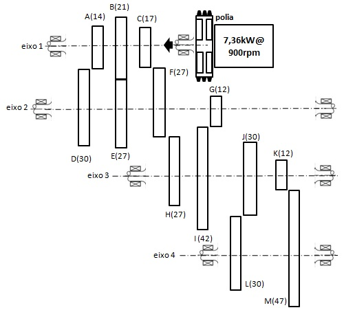

Exercício 19.4 - resolvido - elementos de máquinas 2 do curso de engenharia mecânica FEI A polia da máquina operatriz, recebe em 1 uma potência de 7,36 kW e gira a 900 rpm Dados : `\eta_{engr}` = 97%, `\eta_{rolamento\,por\,eixo}` = 99% `a'_{12}` = 121 mm `a'_{23}` = 148 mm `a'_{34}` = 180 mm ECDR de aço para cementação 15CrNi6, de boa qualidade comercial, considerar `Y_E`=1. $$ { z_A \, = \, 14 \,dentes, \, m_A \, = \, 5,5 \, mm, \, z_B \, = \, 21, \, m_B \, = \, 5,0 \,mm, \, z_C \, = \, 17\, \, m_C \, = \, 5,5mm } $$ $$ { z_D \, = \, 30, \, z_E \, = \, 27, \, z_F \, = \, 27, \, z_G \, = \, 12, \, z_H \, = \, 27, \, } $$ $$ { z_I \, = \, 42, \, m_I \, = \, 5,5mm, \, z_J \, = \, 30, \, z_K \, = \, 12, \, m_K \, = \, 6 \, mm, \, z_L \, = \, 30 \, dentes, } $$ $$ { m_L \, = \, 6 \, mm, \, z_M \, = \, 47. } $$
 Resposta para [1] Quais as engrenagens que necessitam de correção e o respectivo tipo (zero, v-zero ou z-positivo)Possíveis engastes $$ { eixo_1 / eixo_2 \, : \text{engrenagem}_A / engr_D, \;\; engr_B / engr_E, \;\; engr_C / engr_F } $$
$$ { \\eixo_2 / eixo_3 \, : engr_F / engr_H, \;\; engr_G / engr_I } $$
$$ { \\eixo_3 / eixo_4 \, : engr_J / engr_L, \;\; engr_K / engr_M } $$
Engrenamento zero ou sem correção : página 97$$ { a \, = \, a'; \, z_1 \, \ge \, z_{min} \, \Rightarrow \, x_1 \, = \, x_2 \, = \, 0 } $$
Engrenamento V-zero com correção : página 100$$ { \\V-Zero \, : \, a=a' \, ; \, z_1 \, \ge \, z_{min} \, esta \, condição \, é \, suficiente \, sendo \, ainda \, : } $$
$$ { \\(z_1+z_2) \, \ge \, 2.z_{min} \, V-Zero \, x_1 \, = \, -\, x_2 } $$
Engrenamento V :$$ { a \, \ne \, a'; \, (z_1 \, + \, z_2) \, \lt \, 2.z_{min} \, \Rightarrow \, x_1 \, = \, -x_2 \, = \, 0 \begin{cases} x_1, & \text{vide ábaco da página 118 ou 119} \\ x_2 \end{cases} } $$
$$ { a'_{12} \, , \, comparando \, : \begin{cases} a_{AD} \, = \, \cfrac{5,5(14 \, + \, 30)}{2} \, = \, 121; \; a \, = a' \\ a_{BE} \, = \, \cfrac{5,0(21 \, + \, 27)}{2} \, = \, 120; \; a \, \lt \, a' \\ a_{CF} \, = \, \, \cfrac{5,5(17 \, + \, 27)}{2} \, = \, 121; \; a \, = \, a' \end{cases} } $$
admitindo `z_{min}` = 17 (com `\alpha` = 20°)$$ { Admintindo \, z_{minimo} \, = \, 17 \, (com \; \alpha \, = \, 20^o \, graus) } $$
$$ { Par \, AD \, : \, Tipo \, de \, correção \, z_1 \, \lt \, z_{minimo}\, , \, logo \, V-zero } $$
$$ { Par \, BE \, : \, Tipo \, de \, correção \, a \, \lt \, a' \, \Rightarrow \, 120 \, \lt \, 121 , \, logo \, V-positivo } $$
$$ { Par \, CF \, : \, Não \, necessita \, de \, correção, z_1 \, \ge \, z_{minimo} } $$
$$ { a'_{23} \, = \, 148,5 \, comparando\; : \begin{cases} a_{FH} & \, = \, \cfrac{5,5(27 \, + \, 27)}{2} \, = \, 148,5 \, \implies a \, = a' \\ a_{GI} & \, = \, \cfrac{5,5(12 \, + \, 42)}{2} \, = \, 148,5 \, \implies a \, = \, a' \end{cases} } $$
$$ { Par \, FH \, não \, necessita \, de \, correção, \, z_1 \, \ge \, z_{min} \, admitido \, z_{min}=17; \, 27 \, \ge \, 17 } $$
$$ { Par \, GI \, : \, Tipo \, de \, correção \, z_1 \, \lt \, z_{min}, \, Logo \, V-Zero } $$
$$ { a'_{34} \, = \, 180, \,comparando\; : \begin{cases} a_{JL} & \, = \, \cfrac{6(30 \, + \, 30)}{2} \, = \, 180 \, \implies a \, = a' \\ a_{KM} & \, = \, \cfrac{6(12 \, + \, 47)}{2} \, = \, 177; \, \implies a \, \lt \, a' \end{cases} } $$
$$ { Par \, JL \, não \, necessita \, de \, correção, \, z_1 \, \ge \, z_{min} \, admitido \, z_{min}=17; \, 30 \, \ge \, 17 } $$
$$ { Par \, KM \, : \, Tipo \, de \, correção \, a \, \lt \, a', \, Logo \, V-Positivo } $$
Resposta para [2] Rotações no eixo de saida 4.$$ { n_{eixo1} \, = \, 900 \, rpm; \, \frac{z_2}{z_1} \, = \, \frac{n_1}{n_2} } $$
$$ { \frac{z_D}{z_A} \, = \, \frac{n_A}{n_D} \, = \, \frac{30 \,dentes}{14 \,dentes} \, = \, \frac{900rpm}{n_D} \, \Rightarrow \, n_D \, = \, 420 \, rpm } $$
$$ { Rotação \, de \, saída \, no \, eixo \, 2 \, : \\ n_AD \, = \, 420 \, rpm \\ \frac{27 \, dentes}{21 \, dentes} \, = \, \frac{900 \, rpm}{n_BE} \, \Rightarrow \, n_BE \, = \, 700 \, rpm \, e \, ainda \, temos \\ \frac{27 \,dentes}{17 \,dentes} \, = \, \frac{900 \, rpm}{n_CF} \, \Rightarrow \, n_CF \, = \, 566 \, rpm } $$
$$ { Rotação \, de \, saída \, no \, eixo \, 3 \, : \\ \frac{27 \, dentes}{27 \, dentes} \, = \, \frac{420 \, rpm}{n_FH} \, \Rightarrow \, n_FH \, = \, 420 \, rpm \\ \frac{27 \, dentes}{27 \, dentes} \, = \, \frac{700 \, rpm}{n_FH} \, \Rightarrow \, n_FH \, = \, 700 \, rpm \\ \frac{27 \, dentes}{27 \, dentes} \, = \, \frac{566 \, rpm}{n_FH} \, \Rightarrow \, n_FH \, = \, 560 \, rpm \\ rotações GI \\ \frac{42 \, dentes}{12 \, dentes} \, = \, \frac{420 \, rpm}{n_GI} \, \Rightarrow \, n_GI \, = \, 120 \, rpm \\ \frac{42 \, dentes}{12 \, dentes} \, = \, \frac{700 \, rpm}{n_GI} \, \Rightarrow \, n_GI \, = \, 200 \, rpm \\ \frac{42 \, dentes}{12 \, dentes} \, = \, \frac{566 \, rpm}{n_GI} \, \Rightarrow \, n_GI \, = \, 161 \, rpm } $$
$$ { Rotação \, de \, saída FINAL \, no \, eixo \, 4 \, com \, base a, nas rotações \, de 1, \, 2\, e \,3 : \\ \frac{30 \, dentes}{30 \, dentes} \, = \, \frac{420 \, rpm}{n_JL} \, \Rightarrow \, n_JL \, = \, 420 \, rpm \\ \frac{30 \, dentes}{30 \, dentes} \, = \, \frac{700 \, rpm}{n_JL} \, \Rightarrow \, n_JL \, = \, 700 \, rpm \\ \frac{30 \, dentes}{30 \, dentes} \, = \, \frac{566 \, rpm}{n_JL} \, \Rightarrow \, n_JL \, = \, 560 \, rpm \\ rotações KM \\ \frac{47 \, dentes}{12 \, dentes} \, = \, \frac{420 \, rpm}{n_KM} \, \Rightarrow \, n_KM \, = \, 107,1 \, rpm \\ \frac{47 \, dentes}{12 \, dentes} \, = \, \frac{700 \, rpm}{n_KM} \, \Rightarrow \, n_KM \, = \, 178,6 \, rpm \\ \frac{47 \, dentes}{12 \, dentes} \, = \, \frac{566 \, rpm}{n_KM} \, \Rightarrow \, n_KM \, = \, 144,4 \, rpm } $$
Resposta final das rotações de saída no eixo 4 - resolvido : 107,1 rpm, 178,6 rpm, 144,4 rpm, 420 rpm, 560 rpm e 700 rpm. 6 possíveis velocidades de saída.

Resposta para [3] Diâmetro onde a espessura do dente da roda L se anula.
$$ { \\ De \, forma \, genérica \, : \\ s_{xj}=d_{xj}\Bigr[ \frac{1}{z_j}( \frac{\pi}{2} \, + \, 2.x_{j} tan\alpha ) + ev\alpha \, + \, - \, ev \, \alpha_{xj} \Bigr] } $$
$$ { \\ No \, exercício \, para \, engrenagem \, L \, : \\ s_{L}=d_{L}\Bigr[ \frac{1}{z_L}( \frac{\pi}{2}+2.x_{L} tan\alpha ) + ev\alpha \, + \, - \, ev \, \alpha_{xj} \Bigr] } $$
$$ { \\ s_{L} \, = \, zero \\a = \frac{m_L}{2}(z_J + z_sL) = \frac{6}{2}(30 + 30) = 3(60) = 180\; mm \\a=a' pois a'_{3\,e\,4} \; é \; 180\; mm \; (dado\; no\; exercício) \\ Sabendo \, que \ o \, par \, JL \, é z_L \, \ge \, z_{min} \, não \, necessita \, de \, correção \, e \, portanto \, x_L \, = \, 0 \, (zero) \\ s_{L}=d_{xL}\Bigr[ \frac{1}{z_L}( \frac{\pi}{2}+2.x_{L} tan\alpha ) + ev\alpha \, - \, ev \, \alpha_{xj} \Bigr] \\ zero =d_{xL}\Bigr[ \frac{1}{30}( \frac{\pi}{2}+2(0) tan(20,0°) ) + ev(20,0°) - \, ev \, \alpha_{x1} \Bigr] \\ 0 =d_{xL}\Bigr[ \frac{1}{30}( 1,57 + 0 ) + 0,0149044 - \, ev \, \alpha_{x1} \Bigr] \\ 0 =d_{xL}\Bigr[ \frac{1,57}{30} + 0,0149044 - \, ev \, \alpha_{x1} \Bigr] \\ 0 = d_{xL}( 0,052 + 0,0149044 - \, ev \, \alpha_{x1} ) = d_{xL}( 0,0672377 - \, ev \, \alpha_{x1} ) \\desenvolve \; d_{xL} \; fica \; : \; 0 = d_{xL}0,0672377 - d_{xL}.ev \, \alpha_{x1} \\d_{xL}.ev \, \alpha_{x1} = 0,0672377d_{xL} \\ev \, \alpha_{x1} = 0,0672377 . \frac{ d_{xL} } { d_{xL} } \\ev \, \alpha_{x1} = 0,0672377 . \frac{ \cancel{d_{xL}} } { \cancel{d_{xL}} } } $$
Função envolvente do ângulo de pressão onde a espessura zera é de 0,0672377
$${ \\página \; 98\; : \; eV 32,1° = 0,0670481 mais próximo de 0,0672377 }$$
$${ \\página \; 100\; : d_{b1} = z_1.m.cos \alpha \\d_{b1} = z_L.m.cos \alpha \\d_{b1} = 30(6)cos 20,0° \\d_{b1} = 30(6)0,93 \\d_{b1} = 169,14 }$$
$${ \\cos \alpha_x = \frac{ d_B }{ d_x } \Rightarrow d_x = \frac{ d_B }{ cos \alpha_x } \\d_x = \frac{ 169,14 }{ cos( 32,1° ) } \\d_x = \frac{ 169,14 }{ 0,847 } \\d_x = 199,66 \; mm }$$
Resposta para [4] Largura b dos dentes do par de engrenagem K e engrenagem M.$$ { z_K \, = \, 12, \, m_K \, = \, m_M \, = \, 6 \, mm, \, e \, z_M \, = \, 47 } $$
Engrenagem K é pinhão (engrenagem menor) e engrenagem M é a engrenagem coroa (que é a engrenagem maior)$$ { \\ Equação \, do \, critério\, flexão \, no \, pé \, do \, dente \, (Lewis) \\ \sigma_{max} \, = \, \frac{F_{tj}}{b.m}.Y_{Fj}.Y_{serviço}.Y_{\epsilon}.Y_{velocidade} \, \le \, \frac{\sigma_{flexão\,adm\,j}}{k_f} } $$
$$ { \\ equação \, de \, desgaste \, (critério \, de \, Hertz) \\b.(d_1')^2 \, \ge \, \frac{19.10^6.0,7.E_c.P_j.(i \, - \, 1)}{ sen(2.\alpha').n_1.(\sigma_{H\,admissível \, j })^2.i.Y_{serviço}.Y_{velocidade} } \\ e\, só\, se\, aplica\, para\, o\, material\, menos\, resistente \\ unidades \, : \\ Potência \, (P_j) \, : \, [kW] \, kilo \, Watt \\ Módulo \, de \, elasticidade \, equivalente \, (E_c) \, : \, [MPa] \, Mega \, Pascal \\ largura \, dos \, dentes \, (b) \, : \, [mm] \, milimetro \\ Diâmetro \, de \, trabalho \, (d'_1) \, : \, [mm] \\ Tensão \, de \, esmagamento \, admissível \, (\sigma_{Hadm}) \, ; \, [MPa] \, Mega \, Pascal \\ Rotação \, do \, pinhão \, (n_1) \, ; \, [rpm] \, rotação \, por \, minuto } $$
ECDR material metálico aço para cementação 15CrNi6$$ { \\ E_c \, = \, \frac{2.E_1.E_2}{E_1 \, + \, E_2} \, = \, 210.000 \, MPa } $$
Fator de forma `Y_F` precisa conhecer o tipo de engrenamento e correção do perfil `x_1` e `x_2` como a=177 e a'= 180, logo a`\ne`a' 177 `\ne` 180, logo
$$ { \\ \begin{cases} V\;positivo \; quando\; a' \gt a \\V\;negativo \; quando\; a' \lt a \end{cases} } $$
logo engrenamento é do tipo V-Positivo, necessita de correção considerando `\alpha` usual `20^°` $$ { \\ \frac{a'}{a} = \frac{cos \alpha}{cos \alpha'} \Rightarrow cos \alpha' = \frac{a}{a'}.cos \alpha \\ \alpha' = arc\; cos \Bigr( \frac{a}{a'}.cos\alpha \Bigr)= arc cos \Bigr( \frac{177}{180}.cos\,20° \Bigr) \\ \alpha' = arc\; cos \Bigr( 0,983.0,94 \Bigr) = arc\; cos\; (0,924) = 22,4° } $$
$${ \\ eV\; \alpha \Rightarrow eV 20,0° = 0,0149044 \; (página\; 98) \\ eV\; \alpha' \Rightarrow eV 22,4° = 0,0212165 \; (página\; 98) }$$
pegar sempre 7 dígitos a direita da vírgula$${ \\ eV\; \alpha' = B.tg\alpha + eV\, \alpha \Rightarrow eV\; 22,4° = B.tg(20,0°) + eV\, (20,0°) \\ 0,0212165 = B.0,363970 + 0,0149044 \\ B = \frac{0,0212165 - 0,0149044}{0,363970} \\ B = \frac{0,0063121}{0,363970} \Rightarrow B \,= \, 0,0173423 }$$
$${ \\ (x_1 + x_2) = \frac{B\, (z_1 + z_M)}{2} \Rightarrow (x_1 + x_2) = \frac{B\, (z_K + z_M)}{2} \\ (x_1 + x_2) = \frac{0,0173423\, (12 + 47)}{2} \Rightarrow (x_1 + x_2) = \frac{0,0173423\, (59)}{2} \\ (x_1 + x_2) = \frac{1,0231957}{2} = 0,51 \\ }$$
$${ \\ z_{medio} = \frac{z_1 + z_2}{2} = \\ z_{medio} = \frac{z_K + z_M}{2} = \\ z_{medio} = \frac{12 + 47}{2} = \frac{59}{2} \\ z_{medio} = 29,5 }$$
 página 117 : (`x_1` + `x_2`) engrenamento favorável
quando cair na zona de engrenamento inaceitável
não continuar (cálculos) e justificar que o tipo de engrenamento é
inaceitável, ou seja inviável.
página 117 : (`x_1` + `x_2`) engrenamento favorável
quando cair na zona de engrenamento inaceitável
não continuar (cálculos) e justificar que o tipo de engrenamento é
inaceitável, ou seja inviável.
$$ { \\ \begin{cases} pinhão\; motriz\; consultar\; gráfico\; página\; 118 \\coroao\; motriz\; consultar\; gráfico\; página\; 119 \end{cases} } $$
valores de `x_1` e `x_2` no eixo horizontal marcar os valores de `z_1`=`z_K`=12 e `z_2`=`z_M`=47. Com auxílio de uma regua encontrar a metade do segmento entre `z_1` e `z_2`
$${ \\ sabemos\; que\; (x_1 + x_2) = 0,51 \\ \frac{x_1 + x_2}{2} = \frac{0,51}{2} \cong 0,25 }$$
cruzar o ponto da metade do segmento marcado com auxílio de uma régua com o valor na vertical de 0,25 com a intersepção da reta inclinada encontra os valores de `x_1` e `x_2` conforme figura
$${ \\ a' \gt a\; engrenamento\; positivo\; com\; x_1 = x_K = 0,36 \\e\; x_2 = x_M = 0,15 }$$
fator de forma, conhecidos `x_1` = 0,36 e `x_2` = 0,15 na página 120 entre as curvas C e D e na horizontal em `z_1`=12 `\Rightarrow` `Y_{F1} \cong` 3,7 entre as curvas D e E e na horizontal em `z_2`=47 `\Rightarrow` `Y_{F2} \cong` 2,5
Fator do grau de recobrimento `Y_{\epsilon}`, conhecidos `x_1` = 0,36 e `x_2` = 0,15
$${ \\ cos \alpha_{a1} = \underbrace{ cos \Bigr[ \frac{d_{b1}}{d_{a1}} \Bigr] }_{\text{quando temos o módulo}} = \underbrace{ \frac{z_1.cos \alpha . cos \alpha'}{ (z_1 + z_2)cos \alpha - z_2.cos \alpha' + 2cos \alpha' (1 - x_2) } }_{\text{quando não temos o módulo}} \\ \\ cos \alpha_{a1} = \frac{z_1.cos \alpha . cos \alpha'}{ (z_1 + z_2)cos \alpha - z_2.cos \alpha' + 2cos \alpha' (1 - x_2) } \\ cos \alpha_{a1} = \frac{12.cos 20° . cos 22,4°}{ (12 + 47)cos 20° - 47.cos 22,4° + 2cos 22,4° (1 - 0,15) } \\ cos \alpha_{a1} = \frac{12 (0,939) 0,924}{ (59)0,939 - 47.0,924 + 2(0,924)(0,85) } \\ cos \alpha_{a1} = \frac{10,42}{ 13,56 } = 0,768 \\ cos \alpha_{a1} = 0,768 \\ \alpha_{a1} = arc \; cos\, (0,768) \\ \alpha_{a1} = 39,82° }$$
$${ \\ cos \alpha_{a2} = \underbrace{ cos \Bigr[ \frac{d_{b2}}{d_{a2}} \Bigr] }_{\text{quando temos o módulo}} = \underbrace{ \frac{z_2.cos \alpha . cos \alpha'}{ (z_1 + z_2)cos \alpha - z_1.cos \alpha' + 2cos \alpha' (1 - x_1) } }_{\text{quando não temos o módulo}} \\ \\ cos \alpha_{a2} = \frac{z_2.cos \alpha . cos \alpha'}{ (z_1 + z_2)cos \alpha - z_1.cos \alpha' + 2cos \alpha' (1 - x_1) } \\ cos \alpha_{a2} = \frac{47.cos 20° . cos 22,4°}{ (12 + 47)cos 20° - 12.cos 22,4° + 2.cos 22,4° (1 - 0,36) } \\ cos \alpha_{a2} = \frac{47 (0,939) 0,924}{ (59)0,939 - 12.0,924 + 2(0,924)(0,64) } \\ cos \alpha_{a2} = \frac{40,77}{ 55,4 - 11,08 + 1,18 } = \frac{40,77}{ 56,58 - 11,08 } = \frac{40,83}{45,5} \\ cos \alpha_{a2} = \frac{40,77}{ 56,58 - 11,08 } = \frac{40,83}{45,5} \\ cos \alpha_{a2} = \frac{40,83}{45,5} = 0,879 \\ \alpha_{a1} = arc \; cos\, (0,879) \\ \alpha_{a1} = 28,47° }$$
conhecendo o ângulo de pressão do pinhão (`z_K`=12) `\alpha_{a1}`=39,82° da coroa (`z_M`=47) `\alpha_{a2}`=28,47° e do ângulo de pressão real `\alpha'`=22,4° calcular o grau de recobrimento `\epsilon`
$${ \\ \epsilon = \frac{1}{2\pi}[ z_1(tan \alpha_{a1} - tan \alpha') + z_2(tan \alpha_{a2} - tan \alpha') ] \\ \epsilon = \frac{1}{2\pi}[ 12(tan (39,82°) - tan (22,4°) ) + 47(tan (28,47°) - tan (22,4°) ) ] \\ \epsilon = \frac{1}{2\pi}[ 12( 0,834 - 0,412 ) + 47(0,542 - 0,412 ) ] \\ \epsilon = \frac{1}{2\pi}[ 12( 0,422 ) + 47( 0,13 ) ] = \frac{1}{2\pi}[ 5,06 + 6,11 ] \\ \epsilon = \frac{11,17}{2.\pi} = \frac{11,17}{6,28} = 1,77}{ }$$
recobre 1 dente inteiro e mais 77%calculo do fator de recobrimento `Y_\epsilon` $${ \\Y_\epsilon = 0,25 + \frac{0,75}{\epsilon} \\Y_\epsilon = 0,25 + \frac{0,75}{1,77} \\Y_\epsilon = 0,25 + 0,42 = 0,67 }$$
porém foi fornecido no enunciado considerar `Y_\epsilon`=1Fator de velocidade (carga dinãmica) `Y_v` dado que é uma engrenagem de boa qualidade comercial ver tabela VI precisão do dente : a* = 6
$${ \\lembrando \; d'_1 = z.m.\frac{a'}{a} = 12(6)\frac{180}{177} \\d'_1 = 12(6)\frac{180}{177}= 73,22 \; mm \\d'_1 = 73,22 \; mm\; = \; 73,22.10^-3 \; m }$$
rotação que chega no pinhão :$${ \\n_1 = n_K \\ n_1 = \frac{ n_{eixo\,1} }{ i_{max\, eixo\, 1\, e \, 2} . i_{max\, eixo\, 2\, e \, 3}} = \cfrac{ n_{eixo\,1} }{ \cfrac{z_D}{z_A} . \cfrac{z_I}{z_G} } }$$
faz o cálculo considerando o engrenamento de maior relação i (será o maior esforço solicitado, maior transmissão de potência para que seja projetada corretamente - Lewis e Hertz - largura b)
eixo 1 e eixo 2$${ \\ \frac{z_D}{z_A} = \frac{30}{14} = 2,14 \; (maior \; i_{max} \; eixo \; 1 \; e \; 2) \\ \frac{z_E}{z_B} = \frac{27}{21} = 1,28 \\ \frac{z_D}{z_A} = \frac{27}{17} = 1,58 }$$
eixo 2 e eixo 3$${ \\ \frac{z_H}{z_F} = \frac{27}{27} = 1,0 \\ \frac{z_I}{z_G} = \frac{42}{12} = 3,5 \; (maior \; i_{max} \; eixo \; 2 \; e \; 3) }$$
$${ \\n_1 = n_K \\ n_1 = \frac{ n_{eixo\,1} }{ i_{max\, eixo\, 1\, e \, 2} . i_{max\, eixo\, 2\, e \, 3}} = \frac{ n_{eixo\,1} }{ \frac{z_D}{z_A} . \frac{z_I}{z_G} } \\ n_1 = \cfrac{ 900\, rpm }{ \cfrac{30}{14} . \cfrac{42}{12} } \\ n_1 = \frac{ 900\, rpm }{ 2,14 . 3,5 } = \frac{ 900\, rpm }{ 7,49 } \\ n_1 = \frac{ 900\, rpm }{ 7,49 } = 120,16\; rpm \cong 120\; rpm }$$
$${ \\v = \pi.d'_1.n_1 = \pi. 73,22. 10^-3\; m . 120 \frac{rev}{min}.\frac{1min}{60s} = \pi(73,22. 10^-3)2 \\v = = \pi(73,22 \; . \; 10^{-3})2 = 0,46\; m/s }$$
$${ \\F_v = \frac{a* + \sqrt{v} }{a*} = \frac{6 + \sqrt{0,46} }{6} = \\F_v = \frac{6 + \sqrt{0,46} }{6} = \frac{6+0,67}{6} = 1,11 }$$
fator de velocidade `Y_v`é de 1,11 fator de serviço sendo motor elétrico de uma máquina operatriz que é uma máquina ferramenta$$ { \\ F_{tangencial} \, : \\ P = F_t . v \; \Rightarrow F_t = \frac{Pot}{v}; \; \\v= \omega_2. \frac{d'_K}{2} \; \;\;\;\; (d'_K \; funcionamento) \\F_t = \cfrac{Pot}{ \omega_2. \cfrac{d'_K}{2} }; \; } $$
$$ { \\a = m_K \frac{ (z_K + z_M) }{2} \Rightarrow a = \frac{6}{2}.(12 + 47) \\a = \frac{ 6(59) }{2} = \frac{354}{2} = 177\; mm \\ \\a'_{KM} = a'_{eixo\, 3 \, e \,4} = 180\, mm\; (foi\; dado) \\ \frac{d'_K}{d_K} = \frac{a'_K}{a_K} \Rightarrow d'_K = d_K . \frac{a'_K}{a_K} \\d'_K = d_K . \frac{a'_K}{a_K} = z_K.m_K. \frac{a'_K}{a_K} \\d'_K = 12 \,(6) \, \frac{180}{177} = 72(1,017) = 73,22\; mm } $$
$$ { \\velocidade\; v: \\v = \pi (73,22\, . \, 10^{-3}\, m)\, \Bigr( \frac{120}{60} \frac{rev/min}{min/s} \Bigr) \\v = \pi (73,22\, . \, 10^{-3}\, m)\, 2 = 0,46 \; m/s } $$
$$ { \\ Pot_{saída} = P_K\; (potência\; na\; engrenagem\; K) \\P_K = P_1.\eta_{rolamento\, eixo\, 1}.\eta_{engrenagem\, eixo\, 1\,e\,2}.\eta_{rolamento\, eixo\, 2}.\eta_{engrenamento\, eixo\, 1\,e\, 2}.\eta_{rolamento\, eixo\, 3} \\P_K = P_1.\eta_{rol}^3.\eta_{engre}^2 = 7,36\, kW. 0.99^3 . 0,97 ^2 \\P_K = 7,36\, kW. 0.99^3 . 0,97 ^2 = 6,72\, kW } $$
$$ { \\F_tang = \frac{P_K}{v_K} = \frac{6,72\, kW}{\pi.73,22 \, . \, 10^{-3} \, . \, \cfrac{120}{60} } \\F_tang = \frac{6,72\, kW}{\pi.73,22 \, . \, 10^{-3} \, . \, 2 } = \frac{6720}{0,46} \\F_tang = \frac{6720}{0,46} = 14.608 \, Newtons \; de\; força } $$
materiais do pinhão e da coroa $${ \\ Tabela \; X\; página \; 106 \begin{cases} \sigma_{flexão \,adm \,1} = \sigma_{flexão \,adm \,2} = \;440 \; N/mm^2 \\ \sigma_{H\, adm\, 1} = \sigma_{H\, adm\, 2} = \;1.920 \; N/mm^2 \end{cases} }$$
Lewis do pinhão (K) $${ \\ \frac{F_t1}{b.m}Y_{F1}.Y_{\epsilon}.Y_s.Y_v \le \frac{\Sigma_{f \, adm \, 1}}{k_f} \\ assumindo \; k_f = 1,5 \\ \frac{14.608N}{b.6} 3,7 \,(1)\,(1,25)\, \,(1,11)\, \le \frac{ 440 \, N/mm^2 }{ 1,5 } \\ b\ge \frac{14.608N}{440.6} 3,7 \,(1)\,(1,25)\, \,(1,11)\, 1,5 \\ b\ge \frac{112.490,73}{2640} = 42,61 \; mm }$$
Lewis na coroa (M) $${ \\ \frac{F_t2}{b.m}Y_{F2}.Y_{\epsilon}.Y_s.Y_v \le \frac{\Sigma_{f \, adm \, 2} }{k_f} \\ assumindo \; k_f = 1,5 \\ \frac{14.608N}{b.6} 2,5 \,(1)\,(1,25)\, \,(1,11)\, \le \frac{ 440 \, N/mm^2 }{ 1,5 } \\ b\ge \frac{14.608N}{440.6} 2,5 \,(1)\,(1,25)\, \,(1,11)\, 1,5 \\ b\ge \frac{76007,25}{2640} = 28,79 \; mm }$$
Hertz, somente calcula para o material mais fraco $${ \\ \frac{F_t2}{b.m}Y_{F2}.Y_{\epsilon}.Y_s.Y_v \le \frac{\Sigma_{f \, adm \, 2} }{k_f} \\ assumindo \; k_f = 1,5 \\ \frac{14.608N}{b.6} 2,5 \,(1)\,(1,25)\, \,(1,11)\, \le \frac{ 440 \, N/mm^2 }{ 1,5 } \\ b\ge \frac{14.608N}{440.6} 2,5 \,(1)\,(1,25)\, \,(1,11)\, 1,5 \\ b\ge \frac{76007,25}{2640} = 28,79 \; mm }$$